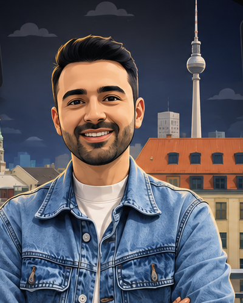

01 / PEOPLE
People Operations
People-first operational support across onboarding, employee processes, learning, employee data and day-to-day People activities.
I turn people, processes and data into better experiences. With experience across customer success, operations and analytics, I enjoy improving workflows, supporting people and using data and AI to solve practical business problems.

People-first operational support across onboarding, employee processes, learning, employee data and day-to-day People activities.
Customer-focused support, request management, issue resolution and cross-functional coordination for a smooth customer experience.
Connecting people, systems and processes to improve execution, data accuracy and stakeholder support.
B1 — telc Certificate
Professional working proficiency
Native
Analytics work turning operational and customer data into useful insights.
View GitHubWork around data accuracy, operational requests, stakeholder support and process reliability.
View GitHubSQL, analytics and academic projects demonstrating structured problem solving.
View GitHub